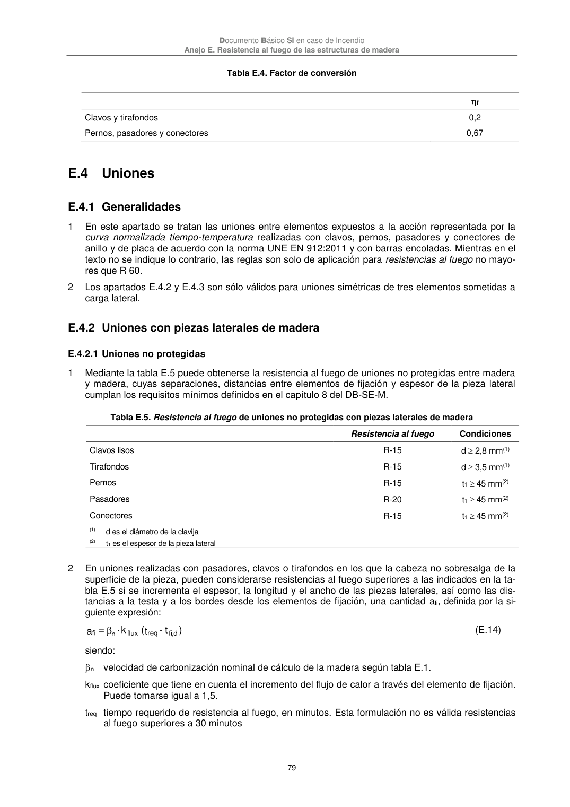

DB-SI · E.4.2 Uniones con piezas laterales de madera · versión 2025-03-04 · capa oficial
Formatos: JSON compacto · Markdown · PDF fuente
Ámbito del documento · texto del ámbito · documento y tablas
ID técnico a0212 · PDF pág. 79 · jerarquía no validada por persona · contrastado con el literal de la página 79 (marcador PDF); no validado por persona · padre: raíz
E.4.2 Uniones con piezas laterales de madera E.4.2.1 Uniones no protegidas 1 Mediante la tabla E.5 puede obtenerse la resistencia al fuego de uniones no protegidas entre madera y madera, cuyas separaciones, distancias entre elementos de fijación y espesor de la pieza lateral cumplan los requisitos mínimos definidos en el capítulo 8 del DB-SE-M. Tabla E.5. Resistencia al fuego de uniones no protegidas con piezas laterales de madera Resistencia al fuego Condiciones Clavos lisos R-15 d 2,8 mm(1) Tirafondos R-15 d 3,5 mm(1) Pernos R-15 t1 45 mm(2) Pasadores R-20 t1 45 mm(2) Conectores R-15 t1 45 mm(2) (1) d es el diámetro de la clavija (2) t1 es el espesor de la pieza lateral 2 En uniones realizadas con pasadores, clavos o tirafondos en los que la cabeza no sobresalga de la superficie de la pieza, pueden considerarse resistencias al fuego superiores a las indicados en la ta- bla E.5 si se incrementa el espesor, la longitud y el ancho de las piezas laterales, así como las dis- tancias a la testa y a los bordes desde los elementos de fijación, una cantidad afi, definida por la si- guiente expresión: ) t - t( k a d ,fi req flux n fi (E.14) siendo: nvelocidad de carbonización nominal de cálculo de la madera según tabla E.1. kfluxcoeficiente que tiene en cuenta el incremento del flujo de calor a través del elemento de fijación. Puede tomarse igual a 1,5. treqtiempo requerido de resistencia al fuego, en minutos. Esta formulación no es válida resistencias al fuego superiores a 30 minutos f Clavos y tirafondos 0,2 Pernos, pasadores y conectores 0,67

PDF fuente redistribuible: copia fiel enlazada en esta página (SHA256 verificado).